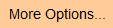
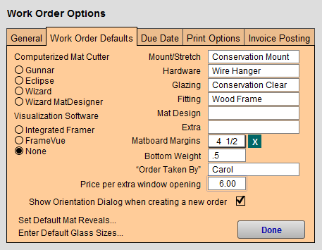
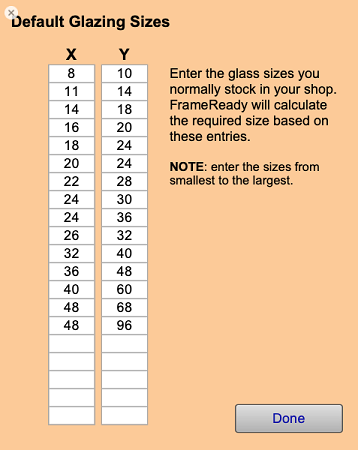
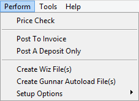
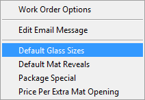
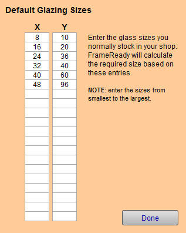
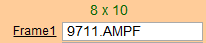

Set up Glass Sizes
This is the only place in FrameReady where you may set your default glazing lite sizes.
How to Set the Default Glass Sizes
-
On the Main Menu, in the Work Orders section, open the Options tab and click the More Options... button.

-
The Work Order Options window appears; open the Work Order Defaults tab.

-
Click the Enter Default Glass Sizes... button.
-
The Default Glazing Sizes screen appears.

-
Glass sizes entered into this chart are the basis for calculating the best/optimal lite size to be used.
When preparing a Work Order, the suggested glass size appears in green text, above the Frame1 field, i.e. 16x20 -
Enter the sizes (X and Y columns) you normally stock, in order from smallest to largest.
Backspace-out any sizes you do not carry.
FrameReady calculates the required lite based on these entries, from smallest to largest, e.g. 8 x 10, 24 x 30, etc. -
Click Done.
Once your chosen lite sizes have been set as defaults, only those sizes can be recommended in the top left corner of the components of the Work Order.
Set the Default Glass Sizes from Work Orders - Menubar
You can also use the "Perform00000" menu in the file menubar.
-
In the file menubar, click Perform.

-
Click Setup Options and then select Default Glass Sizes.

-
The Default Glass Sizes screen appears.

-
Glass sizes entered into this chart are the basis for calculating the best/optimal lite size to be used.
When preparing a Work Order, the suggested glass size appears in green text, above the Frame1 field, i.e. 8x10

-
Enter the sizes (X and Y columns) you normally stock, in order from smallest to largest.
Backspace-out any sizes you do not carry.
FrameReady calculates the required lite based on these entries, from smallest to largest, e.g. 8 x 10, 24 x 30, etc. -
Click Done.
Once your chosen lite sizes have been set as defaults, only those sizes can be recommended in the top left corner of the components of the Work Order.
© 2023 Adatasol, Inc.